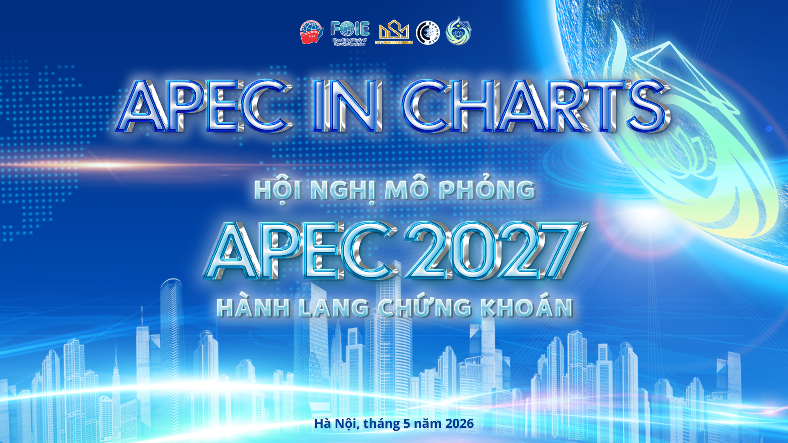

Phân tích xu hướng: Dữ liệu cho thấy sự bất đối xứng rõ rệt giữa quy mô kinh tế và nhân khẩu học tại các tiểu vùng. Trong khi Châu Mỹ và Đông Bắc Á đóng góp tỷ trọng áp đảo vào tổng GDP thực của toàn khối (nhờ năng suất và công nghệ vượt trội), thì lực lượng dân số lại phân bổ đậm đặc tại Đông Bắc Á và Đông Nam Á. Điều này phản ánh tiềm năng dịch chuyển động lực tăng trưởng dài hạn về phía châu châu Á, nơi sở hữu thị trường tiêu dùng khổng lồ và lực lượng lao động dồi dào.
Phân tích xu hướng: Dựa trên dự phóng năm 2026, APEC tiếp tục khẳng định vị thế trụ cột khi chiếm tới 47,44% tổng kim ngạch thương mại toàn cầu (đạt 33,3 nghìn tỷ USD). Mặc dù tốc độ tăng trưởng chung chững lại theo chu kỳ, Đông Nam Á nổi lên là điểm sáng khi kim ngạch bứt phá từ 4,9 lên 5,9 nghìn tỷ USD. Đông Bắc Á và Châu Mỹ vẫn là hai đầu tàu duy trì bộ khung thương mại vững chắc của khối qua các năm 2024 - 2026.
Phân tích xu hướng: Dự phóng đến năm 2026, khu vực APEC đối mặt với sự phân hóa mạnh mẽ về cấu trúc nhân khẩu học. Trong khi Đông Nam Á duy trì được lợi thế "dân số vàng" (độ tuổi 15-64 chiếm 67,5%), thì Đông Bắc Á tiến sâu vào giai đoạn già hóa với 18,3% dân số trên 65 tuổi. Về tỷ lệ giới tính, ngoại trừ Đông Bắc Á đang trong tình trạng mất cân bằng (thừa nam - mức 102,9), các khu vực còn lại của APEC đều duy trì tỷ lệ nghiêng nhẹ về nữ giới.
Phân tích xu hướng: Dự phóng 2026, đà tăng trưởng của APEC sẽ hội tụ về mức trung bình toàn cầu (3,1%). Tuy nhiên, sự phân hóa bên trong khối rất sâu sắc. Nhóm Đông Nam Á (dẫn đầu bởi Việt Nam, Indonesia) và một số nền kinh tế mới nổi tiếp tục là động lực tăng trưởng chính. Điểm đáng chú ý nằm ở độ trễ giữa tăng trưởng quy mô (GDP) và chất lượng (GDP/người); đơn cử như tại Canada hay Úc, việc dân số cơ học tăng nhanh hơn sản lượng đã kéo lùi chỉ số tăng trưởng bình quân đầu người xuống mức âm hoặc cận 0.
Phân tích xu hướng: Biểu đồ cho thấy sự phân hóa rõ rệt về cấu trúc kinh tế nội khối. Các nền kinh tế phát triển (Hồng Kông, Hoa Kỳ, Nhật Bản, Canada) đã hoàn tất quá trình chuyển dịch với nhóm Dịch vụ đóng góp từ 70% đến hơn 90% GDP. Ngược lại, tại các quốc gia đang phát triển (Việt Nam, Indonesia, Thái Lan) và nền xưởng gia công lớn như Trung Quốc, khu vực Công nghiệp Chế biến Chế tạo vẫn duy trì tỷ trọng trên 20%, đóng vai trò là xương sống sản xuất của khu vực. Những nền kinh tế đặc thù như Brunei hay Papua New Guinea có phần "Khác" lớn do phụ thuộc vào khai khoáng.
Phân tích xu hướng: Chỉ số Giá Tiêu dùng (CPI) ghi nhận sự phân hóa giữa các nền kinh tế APEC. Trong khi một số nền kinh tế duy trì lạm phát ở mức kiểm soát, một số khác tiếp tục đối mặt áp lực giá cả. Tuy nhiên, áp lực nhìn chung được kỳ vọng sẽ hạ nhiệt nhẹ vào năm 2026 nhờ các động thái điều hành chính sách tiền tệ chặt chẽ.
Phân tích xu hướng: Biểu đồ thể hiện mức độ biến động dự phóng của các đồng nội tệ so với rổ tiền tệ SDR (Lấy mốc 2025 = 100 điểm). Tỷ giá hối đoái năm 2026 cho thấy sự phân hóa rõ nét. Đồng Rúp (Nga), Peso (Philippines) và Kina (Papua New Guinea) ghi nhận xu hướng lên giá mạnh nhất (+4 đến +8 điểm). Ngược lại, đồng tiền của các quốc gia lấy xuất khẩu làm trọng tâm ở Đông Nam Á (Malaysia, Thái Lan, Brunei) và Trung Quốc dự báo chịu áp lực mất giá nhẹ (-4 đến -6 điểm) nhằm tăng sức cạnh tranh thương mại trên thị trường quốc tế.
Phân tích xu hướng: Biểu đồ cho thấy bức tranh đa chiều về thị trường lao động. Tỷ lệ thất nghiệp chính thức (LU1) của đa số các nền kinh tế được duy trì ở mức tương đối thấp. Tuy nhiên, khi đối chiếu với tỷ lệ thiếu việc làm hỗn hợp (LU4 - bao gồm cả những người nản lòng hoặc làm việc dưới khả năng), khoảng cách chênh lệch bộc lộ rõ rệt. Các quốc gia như Chile, Peru, Papua New Guinea và Philippines ghi nhận mức LU4 lên tới 13-15%, phản ánh tình trạng dư thừa lao động tiềm ẩn rất lớn. Xu hướng từ 2024 đến 2026 cho thấy thị trường có sự giằng co nhưng cấu trúc khoảng cách LU1-LU4 vẫn chưa được thu hẹp đáng kể.
Phân tích xu hướng: Giao thương APEC dự kiến đạt quy mô 33,84 nghìn tỷ USD vào năm 2026, tuy nhiên đà tăng trưởng chung hạ nhiệt mạnh (từ mức đỉnh 7,0% năm 2025 xuống còn 3,0%). Điểm nhấn cốt lõi là sự phân kỳ giữa hai cấu phần: trong khi thương mại hàng hóa đối mặt đà suy giảm đột ngột (xuất khẩu chỉ tăng 1,1%), thì dịch vụ thương mại lại cho thấy sức chống chịu bền bỉ hơn hẳn (duy trì mức tăng 4,3%). Về mặt không gian, Đông Nam Á và Châu Đại Dương đang nổi lên như những bệ đỡ tăng trưởng mới, bù đắp cho sự chững lại của các trung tâm công nghiệp truyền thống tại Đông Bắc Á và Châu Mỹ.
Phân tích xu hướng: Lưu lượng thương mại dịch vụ kỹ thuật số cho thấy sự thống trị tuyệt đối của Hoa Kỳ (USA - dự phóng đạt 827,8 tỷ USD vào năm 2026), vượt xa hoàn toàn so với phần còn lại. Nhóm bám đuổi dẫn đầu bởi Trung Quốc (PRC), Singapore (SGP) và Nhật Bản (JPN). Đáng chú ý, Singapore dù có quy mô dân số và lãnh thổ khiêm tốn nhưng lại đạt kim ngạch dịch vụ kỹ thuật số khổng lồ (243,7 tỷ USD), khẳng định vị thế trung tâm công nghệ và tài chính đầu đầu của khu vực. Các nền kinh tế đang phát triển tại Đông Nam Á và Mỹ Latinh ghi nhận tốc độ tăng trưởng ổn định nhưng quy mô tuyệt đối vẫn còn khá nhỏ.
Phân tích xu hướng: [Nhập nội dung phân tích chi tiết cho biểu đồ 3.3 tại đây...]
Phân loại mức độ ảnh hưởng của chính sách CBAM đối với kim ngạch xuất khẩu Hàng hóa Môi trường (EIG) dựa trên hệ số tương quan thực nghiệm (r).
Phân tích xu hướng: Dự phóng năm 2026 cho thấy sự phân mảnh rõ rệt trong ma trận Tỷ trọng Thu nhập Lao động (LIS) và Năng suất. Các nền kinh tế phát triển (Mỹ, Canada, Nhật Bản, Úc) tập trung ở góc phần tư có LIS cao (> 50%) nhưng tăng trưởng năng suất đang chững lại (< 2,5%). Ngược lại, nhóm đang phát triển (đặc biệt tại Đông Nam Á như Việt Nam, Indonesia, Philippines) thể hiện động lực tăng trưởng năng suất mạnh mẽ (5-6%) nhưng đối mặt thách thức phải cải thiện tỷ lệ phân bổ thu nhập cho người lao động. Đáng chú ý, mức trung bình của toàn khối APEC đang chứng kiến sự sụt giảm LIS vào năm 2026 (xuống 48,4%) so với mức nền năm 2024-2025.
Phân tích xu hướng: Dự phóng đến năm 2026, khoảng cách về hạ tầng số giữa các nền kinh tế APEC vẫn còn đáng kể. Trong khi tỷ lệ tiếp cận Internet cơ bản đang tiến tới mức bão hòa (trung bình khối đạt 92,2%), thì mật độ thuê bao băng thông rộng - hạ tầng thiết yếu cho nền kinh tế số tiên tiến - lại phân hóa sâu sắc. Nhóm Đông Bắc Á và Bắc Mỹ vượt trội về hạ tầng băng thông rộng chất lượng cao, trong khi nhiều quốc gia đang phát triển tại Đông Nam Á và Mỹ Latinh vẫn đang nỗ lực thu hẹp "khoảng cách chất lượng" (Quality Gap) này.
Phân tích xu hướng: Bức tranh doanh nghiệp tỷ đô (Kỳ lân) tại APEC cho thấy sự thống trị tuyệt đối của Hoa Kỳ và Trung Quốc. Đến năm 2026, Mỹ dự kiến sở hữu 880 kỳ lân với tổng định giá lên tới 3.800 tỷ USD, tạo ra khoảng cách mênh mông với phần còn lại. Dù vậy, tổng quy mô vốn hóa kỳ lân của toàn khối APEC vẫn duy trì đà tăng trưởng bùng nổ (từ 3.882 tỷ USD năm 2024 lên hơn 6.000 tỷ USD vào 2026), trong đó Đông Nam Á (dẫn đầu là Singapore và Indonesia) đang nổi lên như một điểm trũng thu hút dòng vốn đầu tư mạo hiểm mới.
Phân tích xu hướng: Khu vực APEC đang vươn lên dẫn dắt xu hướng chuyển đổi xe điện toàn cầu, với tỷ trọng dự phóng đạt 34,5% vào năm 2026 (so với mức 27,5% của thế giới). Tuy nhiên, bức tranh nội khối phân hóa sâu sắc. Đông Bắc Á (được kéo bởi Trung Quốc và Hồng Kông) và các quốc gia Đông Nam Á (đặc biệt là Singapore, Việt Nam, Thái Lan) đang trải qua giai đoạn bùng nổ. Ngược lại, tốc độ chuyển đổi tại Châu Mỹ và Châu Đại Dương đang có dấu hiệu chững lại hoặc biến động, chịu ảnh hưởng từ rào cản chính sách và hạ tầng sạc.
Phân tích xu hướng: Dự phóng đến 2026, Hoa Kỳ và Trung Quốc tiếp tục duy trì thế độc tôn về nhu cầu năng lượng cho Trung tâm Dữ liệu và AI (chiếm khoảng 73% toàn khối). Tuy nhiên, biểu đồ Phân tán Bong bóng (Bubble Chart) bên trái hé lộ một làn sóng dịch dịch chuyển mới: Các quốc gia Đông Nam Á (như Việt Nam, Indonesia, Malaysia) nhờ lợi thế giá điện công nghiệp cực kỳ cạnh tranh (<0.13 USD/kWh) đang trở thành "thỏi nam châm" thu hút đầu tư hạ tầng AI mới. Điều này được thể hiện qua tốc độ tăng trưởng nhu cầu (CAGR) vượt xa mức trung bình, dù quy mô tuyệt đối hiện tại vẫn còn khiêm tốn.
Phân tích xu hướng: Toàn khối APEC ghi nhận đà phục hồi mạnh mẽ trong hoạt động phát hành trái phiếu bền vững. Mặc dù năm 2025 có sự chững lại do chính sách lãi suất toàn cầu, dự phóng 2026 cho thấy quy mô phát hành sẽ vượt mức 524 Tỷ USD. Trong đó, Trung Quốc và Hoa Kỳ tiếp tục là 2 quốc gia dẫn đầu đóng vai trò trụ cột trong việc cung cấp nguồn vốn lớn phục vụ các dự án giảm thiểu phát thải và chuyển đổi năng lượng.
Phân tích xu hướng: Dữ liệu cho thấy hiện tượng "Greenium" (chênh lệch lợi suất âm) đang lan rộng và khắc sâu tại hầu hết các nền kinh tế APEC. Các thị trường mới nổi như Chile, Indonesia, Việt Nam và Trung Quốc ghi nhận mức Greenium sâu nhất (từ -7.5 đến -11.2 bps vào năm 2026), phản ánh nhu cầu vượt trội của giới đầu tư quốc tế đối với tài sản xanh tại các khu vực này. Trong khi đó, các thị trường phát triển (Mỹ, Nhật, Úc) có mức chênh lệch hẹp hơn do thanh khoản dồi dào và thị trường trái phiếu đã bão hòa.
Phân tích xu hướng: Dữ liệu cho thấy "Khoảng cách rủi ro tài chính" giữa các nước phát triển và đang phát triển trong APEC vẫn duy trì ở mức cao (xấp xỉ 280 bps). Tại nhóm phát triển (Nhật Bản, Mỹ, Singapore...), dòng vốn rẻ giúp WACC duy trì ổn định dưới 7%. Ngược lại, nhóm đang phát triển phải đối mặt với WACC cao từ 8.5% - 16%, cản trở khả năng cạnh tranh của các dự án năng lượng tái tạo khi chi phí vay mượn chiếm tỷ trọng lớn.
Phân tích xu hướng: Dữ liệu cho thấy sự gia tăng mạnh mẽ trong việc tuân thủ các khung báo cáo bền vững. Nhóm các nền kinh tế phát triển đang tiến gần đến mức bão hòa (trung bình 95,6% vào năm 2026). Trong khi đó, nhóm đang phát triển ghi nhận tốc độ tăng trưởng ấn tượng (18,2%), đặc biệt là tại Đông Nam Á và Mỹ Latinh, khi các quy định bắt buộc dần có hiệu lực. Khoảng cách tuân thủ giữa hai nhóm dự kiến sẽ thu hẹp đáng kể vào năm 2026.
Phân tích xu hướng: Dữ liệu cho thấy sự phân hóa mang tính cấu trúc. Các nền kinh tế phát triển duy trì quy mô vốn mồi lớn (dự phóng 174,75 Tỷ USD năm 2026) nhưng chỉ cần tỷ lệ bảo lãnh tín dụng mức trung bình (55-85%) nhờ hệ thống tài chính hoàn thiện. Ngược lại, nhóm đang phát triển dù có quy mô vốn nhỏ hơn (111,35 Tỷ USD) nhưng chính phủ phải cam kết tỷ lệ bảo lãnh rất cao (75-98%), cá biệt như Papua New Guinea, Philippines lên tới 95-98% để thu hút dòng vốn quốc tế vào các dự án rủi ro.